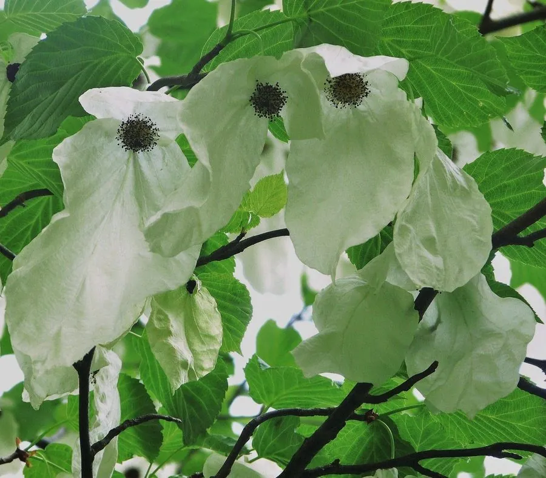

乔木 · 植物界
珙桐 Davidia involucrata

中国特有的珍稀落叶乔木，开花时两片白色苞片宛如群鸽振翅，故有“鸽子树”之称，为第三纪孑遗植物。
- 分类
- 门被子植物门纲木兰纲目山茱萸目科蓝果树科属珙桐属
- 栖息环境
- 海拔 1000–2000 米的中山常绿阔叶林与落叶阔叶混交林，喜凉爽湿润
- 地理分布
- 中国湖北、湖南、四川、贵州、云南等地，野生种群零星分布
- 保护级别
- IUCN 易危（VU）；中国国家一级保护野生植物
物种志
珙桐为落叶乔木，高可达 20 m，树皮深灰褐色并呈块状开裂；叶片宽卵形，边缘具粗锯齿，基出脉明显。花序为头状花序，由一朵两性花与多朵雄花组成，花序基部生有两枚大形白色苞片，长可达 15 cm，形似鸽翼，随风摇曳时宛若群鸽栖枝，因而得名“鸽子树”。核果青紫色，内含坚硬种子。
珙桐是第三纪古热带植物的孑遗种，野生种群仅见于湖北、湖南、四川、贵州、云南等地的中山常绿阔叶林与落叶阔叶混交林，喜凉爽湿润气候与肥沃排水良好的土壤。它的白色苞片并非花瓣，而是特化的叶，用以吸引传粉昆虫。木材可制家具，树形优美，是世界著名的观赏树种，已被广泛引种栽培。每年 4 月前后，珙桐的白色苞片如群鸽展翅，随风轻摇，吸引众多游人与研究者前来观赏，是春季最引人注目的珍稀花木。
形态与习性
- 株高可达 20 m，树冠呈圆锥形
- 花期4–5 月，苞片由绿转白
- 果期9–10 月，核果青紫色
- 光照喜半阴，幼树忌强光直射
- 水分喜湿润，适宜年降水量 1000 mm 以上
- 土壤深厚肥沃、排水良好的酸性黄壤或棕壤
- 繁殖种子繁殖为主，需层积处理打破休眠
趣味知识
- 珙桐的白色“花瓣”其实是两枚苞片，真正的花是中央紫色的头状花序。
- 珙桐是第三纪孑遗植物，与银杏、水杉并称为中国植物界著名的“活化石”。
- 1869 年法国传教士谭卫道在四川发现珙桐，引种后轰动欧洲园艺界。